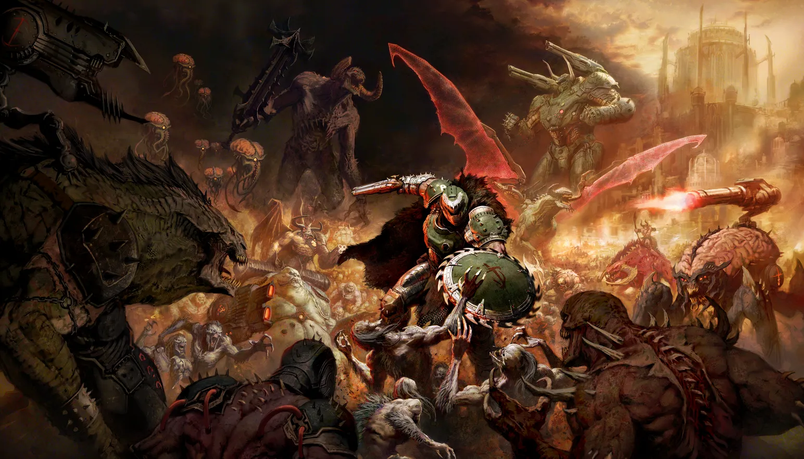
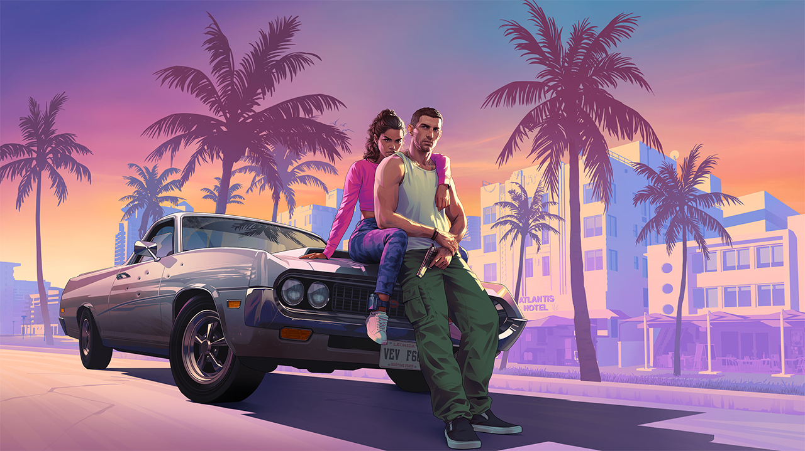

DOOM Eternal
Una épica batalla de acción y aventura, donde los jugadores asumen el rol del Doom Slayer para enfrentarse a las fuerzas del mal en un mundo devastado por demonios.

Cat Detective - Albert Wilde
Un misterioso caso por resolver en el mundo de los felinos. Acompaña a Albert Wilde, el gato detective, mientras desvela los secretos más oscuros de la ciudad.

Grand Theft Auto VI
La próxima entrega de la famosa saga de acción y crimen en mundo abierto. Explora nuevas ciudades y vive la vida de criminal en el mundo más expansivo hasta la fecha.